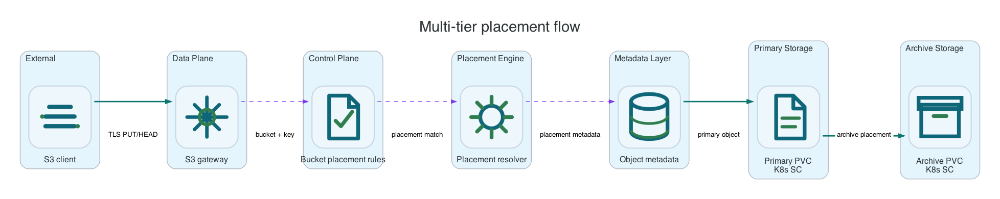

S3 storage class values and PVC placement
Li9 S3 separates the S3 API StorageClass value from Kubernetes StorageClass and PVC placement. The S3 value is object metadata and compatibility behavior; Kubernetes StorageClass provisions the PVCs used by the runtime.
Common AWS CLI setup
Run this once for the target bucket. Replace li9-s3-runtime and app-data with your namespace and S3Bucket resource name.
export NS=li9-s3-runtime
export BUCKET_CR=app-data
export BUCKET="$(oc -n "$NS" get s3bucket "$BUCKET_CR" -o jsonpath='{.status.bucketName}')"
export SECRET="$(oc -n "$NS" get s3bucket "$BUCKET_CR" -o jsonpath='{.status.secretName}')"
export ENDPOINT="$(oc -n "$NS" get secret "$SECRET" -o jsonpath='{.data.AWS_ENDPOINT_URL}' | base64 -d)"
export AWS_ACCESS_KEY_ID="$(oc -n "$NS" get secret "$SECRET" -o jsonpath='{.data.AWS_ACCESS_KEY_ID}' | base64 -d)"
export AWS_SECRET_ACCESS_KEY="$(oc -n "$NS" get secret "$SECRET" -o jsonpath='{.data.AWS_SECRET_ACCESS_KEY}' | base64 -d)"
export AWS_REGION="$(oc -n "$NS" get secret "$SECRET" -o jsonpath='{.data.AWS_REGION}' 2>/dev/null | base64 -d || true)"
export AWS_REGION="${AWS_REGION:-us-east-1}"
export AWS_EC2_METADATA_DISABLED=true
li9s3() {
aws --endpoint-url "$ENDPOINT" --region "$AWS_REGION" --no-verify-ssl s3api "$@"
}To verify the setup, run:
li9s3 head-bucket --bucket "$BUCKET"
li9s3 list-objects-v2 --bucket "$BUCKET" --max-keys 1S3 storage class and placement
There are two different storage-class concepts. The S3 API StorageClass value comes from client requests, lifecycle transitions, replication overrides, or S3ArchivePolicy.spec.storageClass. It is stored as object metadata and controls restore/read behavior. Kubernetes StorageClass is infrastructure configuration referenced by S3Storage.spec.storage.data.pvc.storageClassName and optional archive PVC settings; it decides which backend provisions the PVC.

| Concept | Configured In | Runtime Behavior |
|---|---|---|
| S3 bucket | S3Bucket | Logical S3 namespace, credentials target, endpoint status, and bucket-level feature attachment. |
| S3 API storage class value | PutObject --storage-class, lifecycle transition, replication destination override, or S3ArchivePolicy.spec.storageClass | Stored as object metadata and used by lifecycle/restore logic. It is not a Kubernetes object. |
| Primary data PVC | S3Storage.spec.storage.data.pvc.storageClassName | Stores ordinary readable object payloads through the configured Kubernetes StorageClass/backend. |
| Archive PVC/backend | S3Storage.spec.storage.archive.pvc.storageClassName | Optional archive placement for objects moved by lifecycle or archive policy. |
| Kubernetes StorageClass | Cluster storage class, for example Ceph RBD or CephFS | Provisions PVCs. It controls infrastructure volume behavior, not S3 API compatibility semantics. |
Supported S3 API Values
| S3 API Value | Placement Behavior | Read Behavior |
|---|---|---|
STANDARD | Primary data PVC/backend. | Readable immediately. |
STANDARD_IA, ONEZONE_IA, REDUCED_REDUNDANCY | Primary data PVC/backend with compatibility metadata. | Readable immediately. |
GLACIER_IR | Primary data PVC/backend with archive-compatible metadata. | Readable immediately. |
GLACIER, DEEP_ARCHIVE | Archive PVC/backend when archive placement is enabled. | Requires restore before ordinary reads. |
printf 'warm\n' > /tmp/warm.txt
li9s3 put-object --bucket "$BUCKET" --key tiers/warm.txt --body /tmp/warm.txt --storage-class STANDARD_IA
li9s3 head-object --bucket "$BUCKET" --key tiers/warm.txt --query StorageClass
printf 'archive\n' > /tmp/archive-token.txt
li9s3 put-object --bucket "$BUCKET" --key tiers/archive.txt --body /tmp/archive-token.txt --storage-class DEEP_ARCHIVE
li9s3 head-object --bucket "$BUCKET" --key tiers/archive.txt --query StorageClass
li9s3 restore-object --bucket "$BUCKET" --key tiers/archive.txt --restore-request '{"Days":1,"GlacierJobParameters":{"Tier":"Standard"}}'Archive Verification
Archive-class objects are unreadable until restore metadata is active, then readable for the restore window. When the restore expires, the healer removes the temporary primary copy and the object returns to archive-only state.
li9s3 get-object --bucket "$BUCKET" --key tiers/archive.txt /tmp/archive-read-before-restore.txt || true
li9s3 head-object --bucket "$BUCKET" --key tiers/archive.txt --query Restore
# After restore completion:
li9s3 get-object --bucket "$BUCKET" --key tiers/archive.txt /tmp/archive-restored.txt
cat /tmp/archive-restored.txtUnsupported S3 Storage Class Values
Values tied to AWS-specific products such as Outposts, Snow, S3 Express directory buckets, or FSx integrations are not product-local placement modes. They are rejected with S3-compatible errors instead of being accepted with misleading semantics.